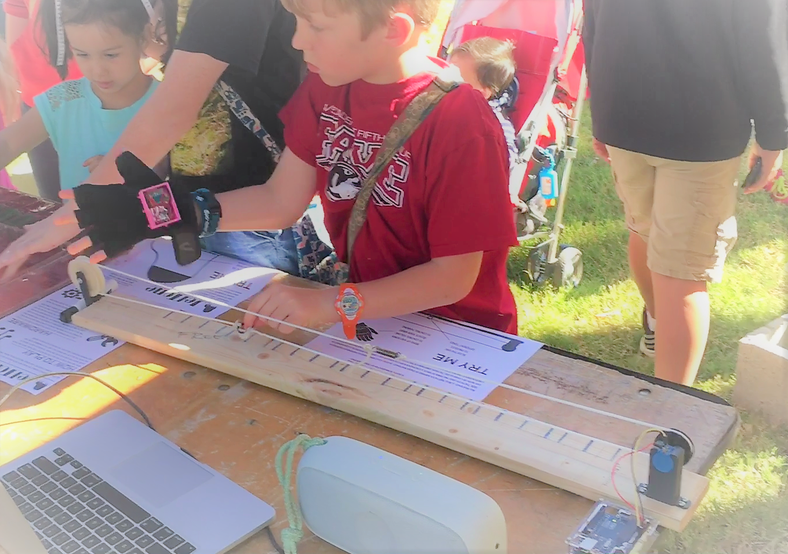
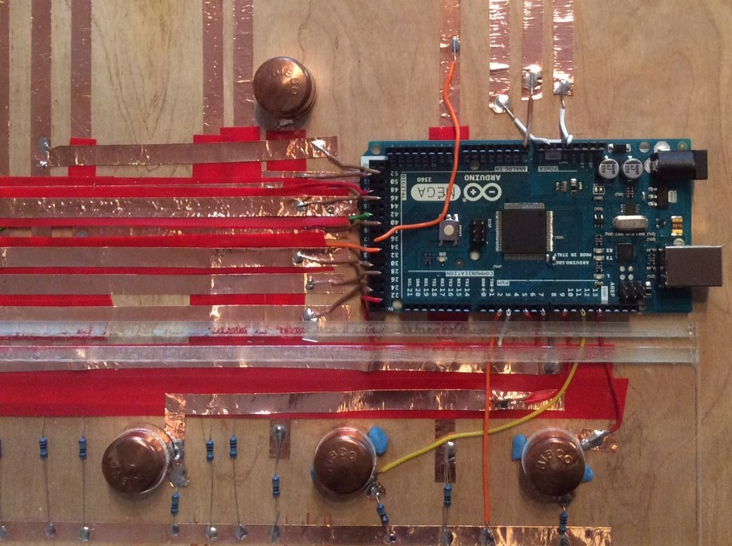

GEPS (GESTURE-BASED PERFORMANCE SYSTEM)
GePS is a performance system with musical applications that maps the wearer's gestures and movements to different sounds. All hard- and software-design is open. Containing a few sensors (gyroscope and accelerometer) and radio (Xbee bluetooth module), the glove will transmit the gesture-data to your laptop where the datastream is analyzed and used to create sound and music. The software system uses the full scale of sensor data, without limiting it to MIDI. The main goal is to transform the complexity of gestures into music without restricting your movement for the sake of simple parameter-mapping. The GePS design and code is licensed under Creative Commons Attribution-ShareAlice 4.0 International, and instructions and documentation on how to build one are available here.

Designed by Cedric Spindler and Frederic Robinson. Built by Alice Barbe, Beatriz Fusaro, and Avrosh Kumar.
MAX MARTENOT 1.0
Max Martenot, a Max/MSP patch inspired by Ondes Martenot, an early electronic musical instrument invented in 1928. The patch uses two forms of input, a continuous slide controller and a wireless gyrometer/accelerometer chip worn on a hand glove. The main component of the patch is a combination of oscillators and filters that emulate a wide range of timbres from vocal-sounding tones to feedback delays. More information about Max Martenot 1.0, including source code and documentation, can be found here.
Designed built by Avrosh Kumar, with contributions from Alice Barbe, Beatriz Fusaro, Frederic Robinson, and Cedric Spindler.
WRAPBEATS
WrapBeats is an instrument that lets you string together notes in order to create different melodies and visual patterns. It is constructed using the Capacitive sensing library for Arduino, combining that with the music abilities of Processing to create a dynamic instrument that can change sounds as you play it. WrapBeats is licensed under Creative Commons Attribution-NonCommercial-ShareAlike 2.5 Generic, and instructions and documentation on how to build one are available here.
 Designed by Lucy Matchett. Built by Alice Barbe and Beatriz Fusaro.